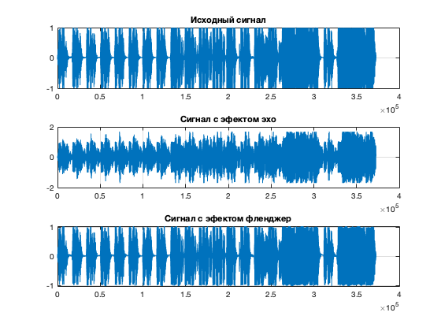

clear;
[x, fs] = audioread('rock.wav');
subplot(3, 1, 1);
plot(x(:, 1)); grid on; title('Исходный сигнал');
a = 0.7;
d = 5000;
z = zeros(size(x));
z = x;
for i = d+1 : length(x)
z(i) = x(i) + a*x(i-d);
end
subplot(3, 1, 2);
plot(z(:, 1)); grid on; title('Сигнал с эфектом эхо');
N = length(x);
delay_cnt = 3*fs;
delay_max = round(0.007*fs);
delay_1 = round(linspace(0, delay_max, delay_cnt));
delay_2 = round(linspace(delay_max, 0, delay_cnt));
delay = [delay_1 delay_2];
n_rep = round(N / length(delay));
delay = repmat(delay, 1, n_rep+1);
y = zeros(1, N);
y = y';
for i = 1 : N
n = delay(i);
if n > 0
y(i)=x(i)+x(n);
else
y(i)= x(i);
end
end
audiowrite('rock-out.wav', y, fs);
subplot(3, 1, 3);
plot(y); grid on; title('Сигнал с эфектом фленджер');
sound(y(1 : 100000), fs);
Warning: Data clipped when writing file.
